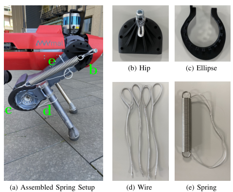
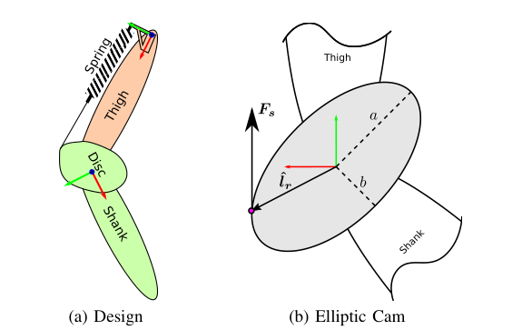
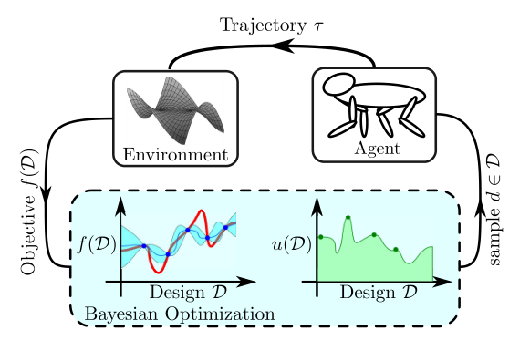
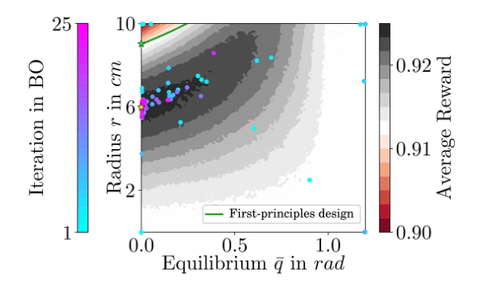
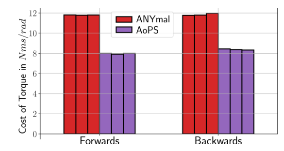
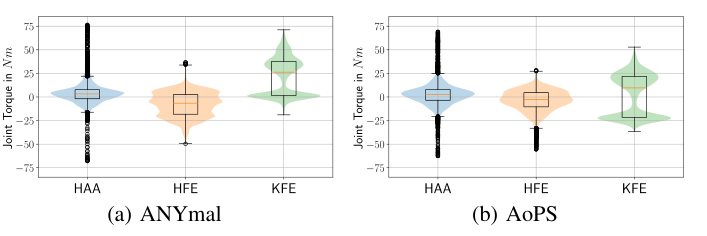

Background & Motivation
在 ANYmal 的膝關節加一條並聯彈簧(spring-wire + 橢圓凸輪),它能不能在動態行走中真的省力?作者先用 RL 訓練一個看得到設計參數的 design-conditioned policy,覆蓋整個彈簧設計空間;再凍結 policy,用 Bayesian Optimization(HEBO) 在模擬裡挑出最佳凸輪形狀與彈簧平衡角。造出來的實機(AoPS)torque-square 成本降 33%、最大關節力矩降 30%、同一顆電池多走 11%,且追蹤性能不打折。
Add a parallel spring (spring-wire + elliptic cam) to ANYmal's knees—does it actually save effort during dynamic walking? The authors first train, with RL, a design-conditioned policy that observes the design parameters and covers the whole spring design space; then they freeze it and use Bayesian Optimization (HEBO) in simulation to pick the best cam shape and spring equilibrium angle. The built robot (AoPS) cuts the torque-squared cost by 33%, peak joint torque by 30%, and walks 11% farther on one battery, with no loss in tracking.

如果只有 30 秒In 30 seconds
- 問題 — 並聯彈性致動器(PEA)理論上能分擔馬達力矩、減少發熱,但彈簧多半憑直覺/仿生設計;而且「好不好」取決於控制器怎麼利用它——設計與控制雞生蛋、蛋生雞。動態行走中的 PEA 效益也幾乎沒有實驗室外的驗證。
- Problem — Parallel elastic actuators (PEAs) can in principle share the motor's torque and cut heating, but springs are mostly designed by intuition / bio-inspiration; and whether a spring is "good" depends on how the controller exploits it—design and control are a chicken-and-egg problem. PEA benefits in dynamic walking had essentially no out-of-lab validation.
- 方法 — 兩階段:① PPO 訓一個以設計參數 \(\boldsymbol d\) 為條件的 teacher policy(每個 episode 隨機抽 \(\boldsymbol d\));② 凍結 policy,HEBO 黑箱搜尋 \(\boldsymbol d\)(每個候選設計跑 1000 個 episode 取平均 reward)。最後把最佳設計造出來,用 teacher-student 蒸餾出可部署的 RNN student。
- Method — Two stages: ① PPO trains a teacher policy conditioned on design parameters \(\boldsymbol d\) (a fresh \(\boldsymbol d\) sampled per episode); ② freeze it and let HEBO black-box-search \(\boldsymbol d\) (1000 episodes per candidate, averaged reward). Build the best design, then distill a deployable RNN student via teacher-student.
- 結果 — 模擬中最佳設計 CoTr 降 33%,而「第一原理」重力補償設計只降 8%;實機平地 CoTr ≈12→8 N·m·s,膝平均力矩 26→7 N·m、峰值 73→52 N·m;跑道續航 2640→3000 m(+11%);野外崎嶇地形一次都沒摔。
- Results — In sim, the optimized design cuts CoTr by 33% vs only 8% for a "first-principles" gravity-compensation design; on hardware, flat-ground CoTr ≈12→8 N·m·s, mean knee torque 26→7 N·m, peak 73→52 N·m; track endurance 2640→3000 m (+11%); outdoor rough terrain with zero falls.
領域脈絡Field context
彈性元件進入腿式機器人有兩條路。Series Elastic Actuator(SEA)(Pratt 1995)把彈簧串在馬達與負載之間:耐衝擊、可量測力矩。ANYmal 的 ANYdrive、ATRIAS、Cassie 都屬此類;HyQ 則在膝到腳之間放串聯彈簧以減少著地抖動。另一條是 Parallel Elastic Actuator(PEA):彈簧與馬達並聯,直接「幫忙出力」。SpaceBok 在模擬月球重力下跳躍能量減半、BirdBot 的跨關節離合彈簧讓膝屈力矩只需 10%、STEPPR 髖部彈簧讓關節電功率省 31%。
Elastic elements entered legged robots along two routes. The Series Elastic Actuator (SEA) (Pratt 1995) puts a spring between motor and load: impact-tolerant, torque-measurable. ANYmal's ANYdrive, ATRIAS, and Cassie belong here; HyQ places a series spring between knee and foot to reduce touchdown chatter. The other route is the Parallel Elastic Actuator (PEA): the spring sits in parallel with the motor and directly "helps push." SpaceBok halved jump energy under simulated lunar gravity, BirdBot's multi-joint clutched spring needs only 10% of the knee-flexing torque, and STEPPR's hip springs saved 31% joint electrical power.
但這些 PEA 幾乎都靠啟發式設計,難以發揮彈簧全部潛力。另一邊,計算式設計(gradient-based、gradient-free、meta-heuristic、surrogate/BO)與 co-design(Scalera、De Vincenti、Dinev、Hardware-as-Policy、Schaff)已有不少,但要嘛固定一條軌跡,要嘛需要可微的模型/規劃器,在崎嶇地形上不穩。
Yet these PEAs are almost all designed heuristically and can't exploit the spring's full potential. Meanwhile computational design (gradient-based, gradient-free, meta-heuristic, surrogate/BO) and co-design (Scalera, De Vincenti, Dinev, Hardware-as-Policy, Schaff) exist, but either fix a single trajectory or need a differentiable model/planner that becomes unstable on rough terrain.
這篇的賭注是:把「每個設計都要重新規劃/重新訓練控制器」這個最貴的內層迴圈,用一個條件化 RL policy 一次攤提(amortize)掉。只要 policy 對每個設計都「接近最優」,外層就能把它當成廉價的黑箱評估器,丟給 BO 去搜。RSL 已有成熟的 teacher-student 四足 sim-to-real 配方,所以這條路對他們成本特別低。[導讀補充]
The bet: amortize the most expensive inner loop—"re-plan / re-train a controller for every design"—into a single conditioned RL policy. As long as the policy is "near-optimal" for each design, the outer loop can treat it as a cheap black-box evaluator for BO. RSL already owns a mature teacher-student quadruped sim-to-real recipe, so this route is especially cheap for them. [guide note]
並聯 vs 串聯彈性:一頁入門Parallel vs series elasticity: a one-page primer [導讀補充 · guide note]
SEA:彈簧串在馬達與關節之間,關節力矩全部都要穿過彈簧、也全部由馬達提供(準靜態下):
SEA: the spring sits between motor and joint; all joint torque passes through the spring and (quasi-statically) is all supplied by the motor:
所以 SEA 帶來的是力矩量測、衝擊保護、短暫儲能,但不會降低馬達平均要出的力矩。PEA 則是彈簧與馬達並聯,關節力矩是兩者之和:
So an SEA buys torque sensing, impact protection, short-term energy buffering—but it does not reduce the average torque the motor must produce. In a PEA the spring is in parallel with the motor, and joint torque is the sum of both:
馬達的銅損(Joule heating)與電流平方、也就與力矩平方成正比:
The motor's copper loss (Joule heating) scales with current squared, hence with torque squared:
(\(R\) 線圈電阻、\(k_t\) 力矩常數、\(N\) 減速比。)若需求力矩 \(\tau_{\text{req}}(t)=\bar\tau+\delta(t)\)(\(\delta\) 零均值),而彈簧剛好吃掉 \(\bar\tau\),則 \(\int\tau_m^2dt\) 從 \(\int(\bar\tau^2+\delta^2)dt\) 降為 \(\int\delta^2dt\)。但彈簧力矩只是關節角的函數 \(\tau_s(q)\),它無法隨時間任意變化——在 swing 相關節離開平衡角時,馬達反而得「對抗彈簧」。設計好的 PEA 要讓「高負載的姿態」剛好落在彈簧最有用的區段。
(\(R\): winding resistance, \(k_t\): torque constant, \(N\): gear ratio.) If the demand is \(\tau_{\text{req}}(t)=\bar\tau+\delta(t)\) (zero-mean \(\delta\)) and the spring absorbs exactly \(\bar\tau\), then \(\int\tau_m^2dt\) drops from \(\int(\bar\tau^2+\delta^2)dt\) to \(\int\delta^2dt\). But spring torque is only a function of joint angle, \(\tau_s(q)\), not of time—during swing, when the joint leaves the equilibrium, the motor must actually fight the spring. A well-designed PEA places the "high-load postures" exactly where the spring helps most.
另一個常被忽略的事實:彈簧是保守力,週期步態一圈下來 \(\oint\tau_s\,dq=0\),所以 PEA 不會減少關節淨機械功 \(\oint\tau_{\text{joint}}\,dq\);它省的是力矩平方相關的銅損(以及若負功無法回收時被浪費的那部分)。這正是本文選 \(\int\tau^2dt\) 而非機械功當指標的物理理由。
An often-missed fact: a spring is conservative, so over one periodic gait cycle \(\oint\tau_s\,dq=0\)—a PEA does not reduce the joint's net mechanical work \(\oint\tau_{\text{joint}}\,dq\); what it saves is torque-squared copper loss (plus whatever negative work would otherwise be dissipated). That is the physical reason the paper uses \(\int\tau^2dt\) rather than mechanical work as its metric.
核心洞見 · KEY INSIGHTSKEY INSIGHTS
值得帶走的不是「加彈簧省 33%」這個數字,而是底下幾個觀念:
What's worth taking away is not "springs save 33%" but these ideas:
- 把內層控制迴圈「攤提」成一個條件化 policy。 不再為每個候選設計重訓控制器;一個看得到 \(\boldsymbol d\) 的 teacher policy 就是可重複使用的設計評估器,BO 每問一次只是在模擬裡 rollout。
- Amortize the inner control loop into one conditioned policy. No re-training per candidate design; a teacher that observes \(\boldsymbol d\) becomes a reusable design evaluator, and each BO query is just simulated rollouts.
- 設計要「控制感知」(control-aware)。 傳統重力補償式的第一原理設計只降 CoTr 8%,co-design 找到的設計降 33%——因為控制器會改變步態去配合彈簧,手算時假設的「平均關節角」本身就會變。
- Design must be control-aware. The classic gravity-compensation first-principles design cuts CoTr by only 8%; the co-designed one by 33%—because the controller reshapes its gait to exploit the spring, so the "average joint angle" assumed by hand calculations itself moves.
- 任務表現平,能耗陡。 設計空間裡 average reward 只差約 1%,CoTr 卻能差 33%:很多設計「走得一樣好」但「花的力氣差很多」——效率是 co-design 最該下手的維度。
- Task performance is flat, energy is steep. Average reward varies by only ~1% across the design space while CoTr varies by 33%: many designs "walk equally well" but "spend very different effort"—efficiency is exactly where co-design pays off.
- 用 privileged learning 吸收「硬體不準」。 學生訓練時設計參數 ±10% 擾動、每條腿平衡角各自隨機化,部署時完全不需彈簧校正或系統辨識。
- Absorb "imprecise hardware" with privileged learning. The student sees design parameters perturbed by ±10% and per-leg randomized equilibria, so deployment needs no spring calibration or system identification.
- PEA 在「動態」行走中也有用。 過去 PEA 的好處多在靜態重力補償;本文顯示在動態步態、崎嶇野外地形中,膝平均力矩 26→7 N·m、峰值降 30%,且魯棒性不受影響。
- PEAs help in dynamic walking too. Prior PEA benefits were mostly static gravity compensation; here, in dynamic gaits and rough outdoor terrain, mean knee torque drops 26→7 N·m and peak by 30%, with robustness unaffected.
- 代理指標 ≠ 電池。 CoTr 降 33%,電池續航卻只多 11%——Joule heating 只是總耗電的一部分(電子、運算、傳動損失沒建模),作者自己也承認這個落差。
- Proxy ≠ battery. CoTr falls 33% but battery endurance rises only 11%—Joule heating is only part of total power draw (electronics, compute, transmission losses are unmodeled), as the authors themselves admit.
Problem Diagnosis
現況 vs 痛點Status quo vs pain points
| 現有做法Existing approach | 它的痛點Its pain point |
|---|---|
| 啟發式 / 仿生 PEAHeuristic / bio-inspired PEA SpaceBok, BirdBot, STEPPR, ATRIAS | 靠直覺或模仿動物(鴕鳥、鴯鶓),變數太多、沒有系統化方法,難以發揮彈簧全部潛力。Driven by intuition or animal mimicry (ostrich, emu); too many variables, no systematic method, can't exploit the spring's full potential. |
| 固定軌跡的設計最佳化Fixed-trajectory design optimization Scalera et al.; De Vincenti et al. | Scalera 在預定軌跡上解非線性最佳化(4-DoF 並聯手臂省 67%);De Vincenti 用可微軌跡追蹤控制器做 control-aware 設計——但軌跡是固定的,換了設計後原軌跡未必最優。Scalera solves a nonlinear program on a predefined trajectory (67% saving on a 4-DoF parallel arm); De Vincenti uses a differentiable tracking controller for control-aware design—but the trajectory is fixed, and may no longer be optimal once the design changes. |
| 每次重新規劃的 co-designRe-planning co-design Dinev et al. 2022 | 每次評估設計都重解 motion planning、以有限差分求梯度(Solo 能效 ×3),但崎嶇地形上有限差分可能讓求解器不穩。Re-solves motion planning per design evaluation and uses finite differences (3× efficiency on Solo), but finite differences on rough terrain may make the solver unstable. |
| RL 同時學設計與控制RL jointly learning design & control Chen (Hardware-as-Policy); Schaff et al. | HWasP 把硬體寫成可微計算圖一起訓——很多硬體寫不成計算圖;Schaff 讓設計分佈邊訓邊收縮,已用在軟體爬行機器人。HWasP writes hardware as a computational graph trained jointly—many hardware choices can't be expressed that way; Schaff shrinks a design distribution during training, applied to a soft crawler. |
核心問題:「能否在幾乎不靠人類直覺的情況下,為四足機器人的並聯彈性膝連同其最佳控制器一起找出設計,並在真實、崎嶇的環境中驗證它真的更省?」
The core question: "With minimal human intuition, can we find the design of a quadruped's parallel-elastic knee together with its optimal controller—and verify on real, rough terrain that it is genuinely more efficient?"
Gap 表 — 誰缺什麼,本文怎麼補Gap table — who lacks what, and how this paper fills it
| 方法Method | 限制Limitation | 本文如何補上How this paper fills it |
|---|---|---|
| 啟發式 PEAHeuristic PEA | 靠直覺決定剛度與平衡角。Stiffness and equilibrium chosen by intuition. | 把彈簧參數化成 \(\boldsymbol d=[\bar q_{\text{KFE}},a,b,\phi_0]\),交給 BO 系統搜尋。Parameterize the spring as \(\boldsymbol d=[\bar q_{\text{KFE}},a,b,\phi_0]\) and let BO search systematically. |
| 固定軌跡Fixed trajectory | 設計變了,控制沒跟著變。Design changes, control doesn't. | design-conditioned policy:每個設計都有「為它調整過」的閉迴路步態。Design-conditioned policy: every design gets a closed-loop gait adapted to it. |
| 模型式 co-designModel-based co-design | 需可微模型、接觸離散性造成不穩。Needs a differentiable model; contact discontinuities cause instability. | 視目標為不可微黑箱(接觸造成離散變化),用 model-free RL + 黑箱 BO。Treat the objective as a non-differentiable black box (contacts cause discrete changes); use model-free RL + black-box BO. |
| 只在實驗室/模擬Lab / sim only | PEA 行走沒有室外比較評估。No comparative outdoor evaluation of PEA walking. | 實機 ANYmal vs AoPS:平地、隨機指令、野外地形、跑道續航五組實驗。Real ANYmal vs AoPS: flat, random commands, outdoor terrain, track endurance—five experiments. |
真正的難點是評估一個設計需要它的最佳控制器。對腿式機器人,「最佳控制器」本身就是一個要訓練數億步的 RL 問題——若每個候選設計都重訓一次,BO 跑 25 次就要 25 個 policy。本文把這個成本變成「訓一次、查無限次」。[導讀補充]
The real difficulty is that evaluating a design requires its optimal controller. For legged robots, the "optimal controller" is itself an RL problem needing hundreds of millions of steps—retraining per candidate would mean 25 policies for 25 BO iterations. The paper turns that into "train once, query forever." [guide note]
Core Method
整體流程:五步The pipeline in five steps
注意順序:policy 先訓完、再做設計搜尋,兩者之間沒有來回迭代。所謂「co-optimization」是靠條件化 policy 把內層攤提掉,而非兩者同時更新(見 CRITIQUE Q1)。
Mind the order: the policy is fully trained first, then the design is searched, with no back-and-forth iteration. "Co-optimization" here means amortizing the inner loop via a conditioned policy, not updating both simultaneously (see CRITIQUE Q1).
① 並聯彈性膝:力矩模型① The parallel-elastic knee: torque model

彈簧力矩由彈簧力與力臂的外積給出,力的大小遵循 Hooke 定律:
Spring torque is the cross product of spring force and lever arm; the force magnitude follows Hooke's law:
鋼索永遠貼著凸輪,所以接觸點由「相切條件」決定,並用一個內積不等式挑出正確的一側:
The wire always touches the cam, so the contact point is fixed by a tangency condition, with an inner-product inequality selecting the correct side:
橢圓凸輪隨小腿轉動:
The elliptic cam rotates with the shank:
彈簧伸長量 \(\Delta l_s\) 要數值解一個橢圓積分(纏繞在凸輪上的鋼索長度),作者略過推導。最後得到一個 4 維設計參數化的非線性力矩:
The spring elongation \(\Delta l_s\) requires numerically solving an elliptic integral (wire length wrapped on the cam); derivation omitted by the authors. The result is a nonlinear torque with a 4-D design parameterization:
[導讀補充] 直覺:當 \(a=b=r\)(圓盤),力臂恆為 \(r\),鋼索伸長 \(\Delta l_s\approx r\,|q-\bar q|\),於是在拉緊側 \(|\tau_s|\approx k_s r^2\,|q-\bar q|\)、鬆弛側為 0——一個單側線性扭簧,等效剛度 \(k_s r^2\)。以實機 \(k_s=4154\) N/m、\(r\approx 6\) cm 估,約 15 N·m/rad 量級;橢圓則讓力臂在約 \(b\) 到 \(a\) 之間變化,形成漸硬或漸軟的特性。Fig.8 的「線性特性」二維實驗就是這個圓盤特例 \(\boldsymbol d=[\bar q,r]\)。
[guide note] Intuition: with \(a=b=r\) (a disc), the lever arm is always \(r\), elongation \(\Delta l_s\approx r\,|q-\bar q|\), so on the taut side \(|\tau_s|\approx k_s r^2\,|q-\bar q|\) and zero on the slack side—a one-sided linear torsion spring of effective stiffness \(k_s r^2\). With the hardware \(k_s=4154\) N/m and \(r\approx 6\) cm that is on the order of 15 N·m/rad; an ellipse makes the lever arm vary roughly between \(b\) and \(a\), giving a stiffening or softening profile. The "linear characteristic" 2-D study in Fig.8 is exactly this disc special case \(\boldsymbol d=[\bar q,r]\).
② 設計目標:Cost of Torque② Design objective: Cost of Torque
真實能耗很難模擬(電子、電腦、感測器、傳動…)。作者假設系統的功率損失可近似為各致動器的 Joule heating(與力矩平方成正比),仿照 Cost of Transport 定義:
True energy use is hard to simulate (electronics, computers, sensors, transmission…). The authors assume system power loss is approximated by the actuators' Joule heating (proportional to torque squared), and define, by analogy with Cost of Transport:
\(m\) 是總質量(會隨設計改變)、\(\Delta s\) 是行進距離,除以兩者讓不同設計、不同速度可比較。[導讀補充] 對照組:真正的 CoT 分子是總能量 \(E=\int P\,dt\);而機械功率 \(P_{\text{mech}}=\sum_j\tau_j\dot q_j\) 會有正有負。CoTr 只看銅損這一項,刻意不管機械功——這與上頁「彈簧不減淨機械功、只減力矩平方」的物理一致,但也意味著它不是完整的電池模型。
\(m\) is total mass (design-dependent), \(\Delta s\) the distance traveled; normalizing by both makes designs and speeds comparable. [guide note] For contrast: true CoT's numerator is total energy \(E=\int P\,dt\), while mechanical power \(P_{\text{mech}}=\sum_j\tau_j\dot q_j\) can be positive or negative. CoTr looks only at copper loss, deliberately ignoring mechanical work—consistent with the physics that a spring reduces torque-squared but not net mechanical work, but it is also not a complete battery model.
③ 設計最佳化:凍結 policy 上的黑箱 BO③ Design optimization: black-box BO on a frozen policy

給定預訓練 policy \(\pi\) 與任務 \(t\in\mathcal T\)(地形、指令…),目標 \(f(\boldsymbol d\mid t,\pi):\mathcal T\times\mathcal D\to\mathbb R\)。因為接觸造成離散動態變化,作者假設 \(f\) 對 \(\boldsymbol d\) 不可微,改用黑箱最佳化:
Given the pretrained policy \(\pi\) and a task \(t\in\mathcal T\) (terrain, commands…), the objective is \(f(\boldsymbol d\mid t,\pi):\mathcal T\times\mathcal D\to\mathbb R\). Because contacts cause discrete changes in dynamics, the authors assume \(f\) is non-differentiable in \(\boldsymbol d\) and use black-box optimization:
實驗中 \(f\) 取為平均 reward,以 \(N\) 步 Monte Carlo 估計(每個設計 1000 個 episode,含隨機初始狀態、擾動、指令):
In experiments \(f\) is the average reward, a Monte Carlo estimate over \(N\) steps (1000 episodes per design, with random initial states, disturbances, commands):
最佳化器是 HEBO(Heteroscedastic Evolutionary BO)——NeurIPS 2020 黑箱最佳化挑戰賽冠軍,這也是作者選 surrogate 法而非 meta-heuristic 的理由。[導讀補充] 兩個記號上的小瑕疵:(i) \(f\) 是 reward(越大越好),式子卻寫 \(\arg\min\),應理解為最小化負 reward;(ii) 期望寫成「對 \(\boldsymbol d\) 取期望」再對 \(\boldsymbol d\) 求 argmin,實際意思是對任務/episode 取期望。
The optimizer is HEBO (Heteroscedastic Evolutionary BO)—winner of the NeurIPS 2020 black-box optimization challenge, which is why the authors chose a surrogate method over meta-heuristics. [guide note] Two notational quirks: (i) \(f\) is a reward (higher is better) but the formula says \(\arg\min\)—read it as minimizing negative reward; (ii) the expectation is written "over \(\boldsymbol d\)" while taking the argmin over \(\boldsymbol d\); the intended meaning is an expectation over tasks/episodes.
理想的 co-design 是「每個 \(\boldsymbol d\) 都配上它自己的最佳 \(\pi^*_{\boldsymbol d}\)」。本文用一個以 \(\boldsymbol d\) 為輸入的 policy 一次近似所有 \(\pi^*_{\boldsymbol d}\)——這是整個方法最關鍵、也最可質疑的假設。
Ideal co-design pairs every \(\boldsymbol d\) with its own optimal \(\pi^*_{\boldsymbol d}\). The paper approximates all \(\pi^*_{\boldsymbol d}\) at once with one policy that takes \(\boldsymbol d\) as input—the method's most crucial, and most contestable, assumption.
④ Design-conditioned policy(teacher)④ The design-conditioned policy (teacher)
作者假設以設計參數為條件的神經網路 policy 能對每個設計達到近最優(參考 Won & Lee 2019 的 shape-conditioned 角色控制),並沿用 Lee et al. 2020 的 privileged learning。RL 目標:
The authors assume a neural policy conditioned on design parameters can be near-optimal for each design (following Won & Lee 2019's shape-conditioned character control), and adopt the privileged learning of Lee et al. 2020. The RL objective:
[導讀補充] 由於 \(\boldsymbol d\) 每個 episode 從 \(\mathcal D\) 隨機抽,實際上最大化的是「設計平均」的回報,這就是攤提的來源:
[guide note] Since \(\boldsymbol d\) is sampled from \(\mathcal D\) every episode, what is actually maximized is a design-averaged return—this is where the amortization comes from:
| 元件Component | 內容Contents |
|---|---|
| Obs \(o_t\in\mathbb R^{133}\) | 目標速度指令、基座姿態、線/角速度、FTG 參數、關節位置與速度的短歷史、最近兩次關節目標。Target velocity command, base orientation, linear/angular velocity, FTG parameters, short history of joint positions and velocities, last two joint targets. |
| Privileged \(\in\mathbb R^{46}\) | 接觸摩擦、各腳接觸狀態與力、施加在基座的外力/力矩、設計參數 \(\boldsymbol d\)、連桿質量。每條腿的彈簧平衡角分開觀測(免去設計校正)。Contact friction, per-foot contact state and force, external forces/torques on the base, design parameters \(\boldsymbol d\), link masses. Spring equilibria are observed separately per leg (avoids design calibration). |
| Action \(a_t\in\mathbb R^{16}\) | 4 個 FTG 頻率 + 12 個關節位置增量;FTG 輸出預定抬腳高度的垂直足端軌跡,再經 IK 轉為關節目標。4 FTG frequencies + 12 joint-position deltas; the FTG emits vertical foot trajectories with preset clearance, mapped to joint targets via IK. |
| Reward | 追 \(x,y\) 線速度與 yaw 角速度;懲罰基座 \(z\) 速度、roll/pitch 角速度、關節目標加速度(平滑)、致動器力矩 L2、超速關節、腳滑。Track \(x,y\) linear and yaw angular velocity; penalize base \(z\) velocity, roll/pitch rates, joint-target acceleration (smoothness), actuator torque L2, over-limit joint velocity, foot slip. |
| 架構 / 演算法Arch / algo | MLP policy + encoder(特權資訊 → 嵌入 \(\bar{\boldsymbol l}_t\));PPO;剛體動力學模擬。MLP policy + encoder (privileged info → embedding \(\bar{\boldsymbol l}_t\)); PPO; rigid-body simulation. |
關鍵:reward 裡的「力矩 L2 懲罰」就是 CoTr 的近親——作者指出 \(\text{CoTr}\subset\text{AverageReward}\)。所以 BO 最大化平均 reward,間接在壓 CoTr,同時保住追蹤品質。
Key: the reward's "torque L2 penalty" is a close cousin of CoTr—the authors note \(\text{CoTr}\subset\text{AverageReward}\). So BO maximizing average reward is indirectly pushing CoTr down while preserving tracking quality.
⑤ 部署 policy(student)與實機設計⑤ Deployment policy (student) and the built design
Student 是 RNN,只看帶雜訊的本體感覺(IMU、關節編碼器)與外感(深度感測器)歷史,以模仿學習 + 特權嵌入 \(\bar{\boldsymbol l}_t\) 的重建損失訓練(同 Lee et al. 2020;外感部分改自 Miki et al. 2022)。[導讀補充] 示意性的損失:
The student is an RNN that sees only noisy proprioceptive (IMU, joint encoders) and exteroceptive (depth sensors) histories, trained by imitation plus a reconstruction loss on the privileged embedding \(\bar{\boldsymbol l}_t\) (as in Lee et al. 2020; exteroception adapted from Miki et al. 2022). [guide note] A schematic loss:
應對彈簧模型誤差:蒸餾時設計參數從最佳值擾動 10%(模擬製造精度),每條腿的平衡角也分別隨機化(鋼索長度因製造限制不一)。Teacher 看得到精確值,student 看不到——它必須從歷史推斷。
Handling spring model mismatch: during distillation, design parameters are perturbed by 10% around the optimum (emulating manufacturing precision), and each leg's equilibrium is randomized separately (wire lengths differ due to manufacturing). The teacher sees exact values; the student doesn't—it must infer them from history.
| 實機最佳設計Built optimal design | 值Value |
|---|---|
| 彈簧剛度Spring stiffness \(k_s\) | 4154 N/m |
| 長軸 / 短軸Major / minor semi-axis \(a,b\) | 8.1 cm / 6.0 cm |
| 初始角Initial angle \(\phi_0\) | 0.0 rad |
| 平衡角Equilibrium \(\bar q_{\text{KFE}}\) | 0.36 rad |
| 總質量 AoPS / ANYmalTotal mass AoPS / ANYmal | 52.5 kg / 51.3 kg |
Policy 只在「拉」的方向使用彈簧,所以每膝一條拉伸彈簧即可實作。基線 ANYmal 是同一個 teacher 在 \(a=b=0\)(力臂為零 = 沒彈簧)下蒸餾出的 student——兩者控制管線完全相同。
The policies use the spring only in the pulling direction, so one tension spring per knee suffices. The baseline ANYmal is a student distilled from the same teacher at \(a=b=0\) (zero lever arm = no spring)—both share an identical control pipeline.
符號白話對照Symbols in plain words
| \(\boldsymbol d\) | 設計參數 \([\bar q_{\text{KFE}},a,b,\phi_0]\):彈簧平衡角、橢圓長短軸、橢圓初始角。Design parameters \([\bar q_{\text{KFE}},a,b,\phi_0]\): spring equilibrium, ellipse semi-axes, ellipse initial angle. |
| \(\bar q_{\text{KFE}}\) | 彈簧力為零時的膝角;越過它彈簧才開始拉。Knee angle where spring force is zero; past it the spring starts pulling. |
| \(\hat{\boldsymbol l}_r(\theta)\) | 彈簧力的力臂:凸輪上與鋼索相切的接觸點,隨膝角移動。Lever arm of the spring force: the cam point tangent to the wire; moves with knee angle. |
| \(\tau_s=\psi(q,\boldsymbol d)\) | 彈簧給膝關節的力矩;\(a\neq b\) 時對 \(q\) 非線性。Spring torque on the knee; nonlinear in \(q\) when \(a\neq b\). |
| \(\text{CoTr}\) | 力矩平方積分 / (重量 × 距離):銅損的代理指標。Integrated torque squared / (weight × distance): a proxy for copper loss. |
| \(f(\boldsymbol d\mid t,\pi)\) | 在任務 \(t\)、固定 policy \(\pi\) 下評估設計 \(\boldsymbol d\) 的分數(此處 = 平均 reward)。Score of design \(\boldsymbol d\) on task \(t\) with frozen policy \(\pi\) (here = average reward). |
| \(\bar{\boldsymbol l}_t\) | 特權資訊(含 \(\boldsymbol d\))的嵌入;student 需從歷史重建它。Embedding of privileged info (incl. \(\boldsymbol d\)); the student must reconstruct it from history. |
Experimental Evidence
實驗 1(模擬):BO 找得到最佳設計嗎?Exp. 1 (sim): does BO find the optimal design?
為了能畫出來,把凸輪限制成圓(\(a=b=r\)),設計只剩 \(\boldsymbol d=[\bar q,r]\)。用 40×40 網格、每點 200 台機器人(共 320,000 條軌跡)畫出平均 reward 的等高線,再疊上 25 次 BO 迭代。任務是 1 m/s 前進,含踏石、平地、崎嶇地形,基座擾動最高 50 N / 50 N·m,摩擦 \(\mu\in[0.5,2]\)。
To make it plottable, the cam is restricted to a circle (\(a=b=r\)), leaving \(\boldsymbol d=[\bar q,r]\). A 40×40 grid with 200 robots per point (320,000 trajectories) gives the average-reward contour, overlaid with 25 BO iterations. Task: 1 m/s forward walking over stepping stones, flat and rough terrain, base perturbations up to 50 N / 50 N·m, friction \(\mu\in[0.5,2]\).

| 設計Design | \(\bar q\) | \(r\) | CoTr vs 基線CoTr vs baseline |
|---|---|---|---|
| 無彈簧基線No-spring baseline | — | 0 cm | 0% |
| 第一原理(重力補償於平均膝角 1.3 rad)First-principles (gravity comp. at mean knee angle 1.3 rad) | 0.0 rad | 9.02 cm | −8% |
| BO 最佳BO optimum | ≈0.0 rad | ≈6.0 cm | −33% |
平均 reward 只差約 1%,但 CoTr 差 33%,且是第一原理設計的 4 倍效益。第一原理設計的盲點:它用「正常 ANYmal 的平均膝角」來設計,卻沒考慮控制器會因彈簧而改變步態。
Average reward differs by only ~1%, yet CoTr differs by 33%—4× the first-principles design's benefit. The first-principles blind spot: it designs around "regular ANYmal's mean knee angle," ignoring that the controller changes its gait once the spring is there.
可重複性與任務依賴Repeatability and task dependence
- 5 個 random seed(完整 4-D 空間、平地 1 m/s):最佳設計的角度標準差 < 3°、半徑標準差 < 1 mm → 不會每次給出隨機設計。
- 5 random seeds (full 4-D space, flat terrain 1 m/s): optimal-design std < 3° for angles and < 1 mm for radii → it doesn't spit out random designs.
- 5 種任務(站立、負重 20 kg、樓梯、平地、崎嶇)各自得到明顯不同的凸輪形狀與平衡角;實機採用「崎嶇地形」那組。
- 5 tasks (standing, 20 kg payload, stairs, flat, rough) each yield a visibly different cam shape and equilibrium; the hardware uses the "rough terrain" design.
[導讀補充] 後者是兩面刃:它證明方法對任務敏感,但也表示一個實體彈簧只對一種任務最佳。
[guide note] The latter cuts both ways: it shows the method is task-sensitive, but also that one physical spring is optimal for only one task.
實機主結果:ANYmal vs AoPSMain hardware results: ANYmal vs AoPS
| 實驗Experiment | 指標Metric | ANYmal | AoPS | \(\Delta\) |
|---|---|---|---|---|
| 平地直走 16 m 前進/後退各 3 次Flat 16 m straight 3× fwd, 3× bwd | CoTr | ≈12 N·m·s | ≈8 N·m·s | −33% |
| 速度追蹤誤差Velocity tracking error | < 0.25 m/s | < 0.25 m/s | 無顯著差n.s. | |
| 隨機指令 10×3 s LF 腿力矩Random commands 10×3 s LF-leg torques | 效率增益Efficiency gain | — | ≈30% | ≈−30% |
| 膝 (KFE) 平均力矩Knee (KFE) mean torque | ≈26 N·m | ≈7 N·m | −73% | |
| 最大絕對力矩Max absolute torque | 73 N·m | 52 N·m | −29% | |
| 野外崎嶇地形Outdoor rough terrain | 跌倒次數Falls | — | 0 | — |


實驗 5:跑道續航(Tab.I)Exp. 5: running-track endurance (Tab. I)
| AoPS | ANYmal | |
|---|---|---|
| 圈數(400 m 跑道)Rounds (400 m track) | 7.5 | 6.6 |
| 行進距離Distance traveled | 3000 m | 2640 m |
| 初始 / 結束電量Initial / final charge | 92% / 11% | 89% / 10% |
| 運作時間Operation time | 68 min | 59 min |
| 平均速度(指令 1 m/s)Avg velocity (commanded 1 m/s) | 0.735 m/s | 0.740 m/s |
| 效率Efficiency | 111% | 100% |
| 室外溫度Outside temperature | 31 °C | 26 °C |
效率以距離比並按電量差線性校正:
Efficiency is the distance ratio, linearly corrected for the charge mismatch:
結論:同一顆電池多走至少 11%。但與 CoTr 的 33% 落差明顯——作者在結論承認有未建模的電子與機械損失。
Conclusion: at least 11% more distance on the same battery. But the gap to CoTr's 33% is clear—the authors concede unmodeled electrical and mechanical losses.
證據解讀(本文沒有傳統消融,改讀「對照」)Reading the evidence (no classic ablation—read the contrasts)
| 對照Contrast | 結果Result | 證明了什麼What it shows |
|---|---|---|
| BO 最佳 vs 第一原理(模擬)BO optimum vs first-principles (sim) | −33% vs −8% CoTr | control-aware 設計遠勝手算Control-aware design beats hand calculation |
| AoPS vs \(a=b=0\) 基線(實機)AoPS vs \(a=b=0\) baseline (hardware) | −33% CoTr, −29% peak | 同一控制管線下,PEA 的增益在實機上保留下來Under the same control pipeline, the PEA gain survives on hardware |
| 5 seeds5 seeds | <3°, <1 mm | 設計搜尋可重複Design search is repeatable |
| 5 種任務5 tasks | 設計各異Distinct designs | 最佳設計依賴任務The optimum is task-dependent |
| CoTr vs 電池CoTr vs battery | 33% vs 11% | 代理指標高估了整機效益The proxy overstates system-level gains |
能證明:在一個速度(1 m/s)、一種步態下,co-designed PEA 能在實機上顯著降低力矩成本且不傷追蹤與魯棒性。不能證明:條件化 policy 真的對每個設計都近最優;能耗結論能推廣到其他速度/步態;BO 找到的就是全域最佳(4-D 空間沒有網格真值)。
Proves: at one speed (1 m/s) and one gait, a co-designed PEA substantially reduces torque cost on hardware without hurting tracking or robustness. Does not prove: that the conditioned policy is near-optimal for every design; that the energy conclusion generalizes to other speeds/gaits; that BO found the global optimum (no grid ground truth in 4-D).
Critical Reading
可被質疑的點Contestable points
- 「co-optimization」其實是兩階段、序列式的。 Policy 在整個 \(\mathcal D\) 上先訓完,BO 才在凍結的 policy 上搜;兩者沒有交替更新,也沒有在 \(\boldsymbol d^*\) 附近再精修 teacher。這叫「amortized bi-level」比叫「joint」更精確。若 policy 的容量在 \(\mathcal D\) 某些區域(例如邊界)較弱,BO 看到的地形就被控制器的偏差而非設計本身的好壞扭曲。作者在結論承認無法保證條件化 policy 與「逐設計訓練」一樣好,並說差距「可忽略」——但本文沒給這個差距的數字(只引自家 Meta-RL 研究)。
- "Co-optimization" is really two-stage and sequential. The policy is fully trained over \(\mathcal D\) before BO searches on the frozen policy; there is no alternating update, nor teacher refinement near \(\boldsymbol d^*\). "Amortized bi-level" is more accurate than "joint." If policy capacity is weaker in some regions of \(\mathcal D\) (e.g. the boundary), the landscape BO sees is distorted by controller bias rather than true design quality. The conclusion admits the conditioned policy can't be guaranteed as good as per-design training and calls the gap "negligible"—but no number for that gap is given here (it defers to the group's own Meta-RL study).
- 目標函數與敘事不一致。 方法章節把設計目標講成能效(CoTr),實驗卻用平均 reward 當 \(f\);力矩 L2 只是 reward 的一項,權重未公開。而 reward 地形極平(0.90–0.92,約 1%),BO 是在 1000 episodes 的 Monte Carlo 雜訊裡追一個小訊號。「最高 reward = 最低 CoTr」只在 2-D 圓盤案例被展示;4-D 橢圓實機設計的 CoTr 地形並未呈現。
- Objective vs narrative mismatch. The method frames the design objective as efficiency (CoTr), but experiments use average reward as \(f\); torque L2 is one reward term with undisclosed weights. The reward landscape is extremely flat (0.90–0.92, ~1%), so BO chases a small signal through Monte Carlo noise over 1000 episodes. "Highest reward = lowest CoTr" is shown only for the 2-D disc case; the CoTr landscape for the 4-D elliptic hardware design is never shown.
- 能耗指標的選擇。 \(\int\tau^2dt\) 只代表銅損,忽略機械功、齒輪/傳動摩擦、驅動器與電腦的基礎功耗;且各關節等權。結果是CoTr −33% 只換到電池 +11%。對 ANYmal 這類有大量感測與運算負載的機器,用「電池續航」或實測電功率當設計目標也許會選出不同的彈簧。另外 PEA 帶來 +1.2 kg,CoTr 雖除以 \(m\),但 \(\int\tau^2\) 本身會因質量增加而上升,這部分並未拆開討論。[導讀補充]
- Choice of energy metric. \(\int\tau^2dt\) captures copper loss only, ignoring mechanical work, gear/transmission friction, and the base draw of drives and computers; joints are equally weighted. The upshot: −33% CoTr buys only +11% battery. For a robot like ANYmal with heavy sensing/compute loads, optimizing battery endurance or measured electrical power might pick a different spring. Also, the PEA adds 1.2 kg; CoTr divides by \(m\), but \(\int\tau^2\) itself rises with mass, and that effect isn't separated. [guide note]
- 基線的公平性。 「ANYmal」基線不是 ANYmal 原廠控制器,也不是專為剛性腿訓練的 policy,而是同一個條件化 teacher 在 \(a=b=0\) 處蒸餾出的 student。這讓比較「控制管線一致」,很乾淨;但 \(r=0\) 位於設計空間的邊界,若條件化 policy 在邊界較差,基線就被低估,增益就被高估。一個「只在剛性腿上訓練」的 specialist 基線會更有說服力。
- Baseline fairness. The "ANYmal" baseline is neither ANYmal's stock controller nor a policy trained specifically for rigid legs; it is a student distilled from the same conditioned teacher at \(a=b=0\). That keeps the control pipeline identical—clean—but \(r=0\) lies on the edge of the design space; if the conditioned policy is weaker at the edge, the baseline is understated and the gain overstated. A specialist baseline trained only on rigid legs would be more convincing.
- 只有一個速度、一種步態。 設計與實機都針對 1 m/s 前進(實際平均 0.735–0.740 m/s)。PEA 的效益高度依賴「高負載姿態落在彈簧有效區」,換成慢走、快跑、跳躍、側移或恢復動作時是否仍有利、甚至變成負擔,完全未測。Fig.9 已顯示不同任務的最佳設計不同,一個固定彈簧注定是折衷。
- One speed, one gait. Design and hardware both target 1 m/s forward walking (actual average 0.735–0.740 m/s). PEA benefit hinges on "high-load postures landing in the spring's useful range"; whether it still helps—or becomes a burden—for slow walking, fast running, jumping, lateral motion, or recovery is entirely untested. Fig.9 already shows different tasks want different designs; a fixed spring is necessarily a compromise.
- 實機統計薄弱。 平地 3+3 次、續航每台各 1 次、先後進行、氣溫 31 vs 26 °C、初始電量 92 vs 89%。效果量(33%)很大,所以結論方向大概率成立,但 +11% 續航的信賴區間其實未知(鋰電池容量對溫度敏感)。
- Thin hardware statistics. Flat walking 3+3 trials; endurance one run per robot, sequential, 31 vs 26 °C, initial charge 92 vs 89%. The effect size (33%) is large, so the direction is very likely right, but the confidence interval of the +11% endurance is unknown (Li-ion capacity is temperature-sensitive).
- 設計空間很小、只動膝。 4 維、單一關節,BO 輕鬆勝任;但若要把連桿長度、質量分佈納入(作者列為未來工作),條件化 policy 必須涵蓋大得多的 \(\mathcal D\),攤提假設會更吃力。機構本身也限制了膝的工作空間、鋼索實作不精準(作者自承)。
- Tiny design space, knee only. 4-D, one joint—easy for BO; adding link lengths and mass distribution (listed as future work) would require the conditioned policy to cover a much larger \(\mathcal D\), straining the amortization assumption. The mechanism also limits knee workspace and the cable implementation can be inaccurate (authors concede).
給讀書會 / 審稿的犀利問題Sharp questions for a reading group / review
- Joint 還是 sequential? 若在 \(\boldsymbol d^*\) 附近再 fine-tune teacher、重新跑 BO(交替迭代),最佳設計會移動嗎?條件化 policy 與「逐設計 specialist」在 \(\boldsymbol d^*\) 與 \(r=0\) 的 reward/CoTr 差多少?
- Joint or sequential? If the teacher were fine-tuned near \(\boldsymbol d^*\) and BO re-run (alternating), would the optimum move? How large is the gap between the conditioned policy and a per-design specialist at \(\boldsymbol d^*\) and at \(r=0\)?
- 平坦的 reward 地形:reward 差 1% 的情況下,BO 的選擇有多少來自 Monte Carlo 雜訊?若直接把 CoTr(或實測電功率)當 \(f\),設計會不同嗎?
- Flat reward landscape: with only ~1% reward spread, how much of BO's choice is Monte Carlo noise? Would the design differ if CoTr (or measured electrical power) were used as \(f\) directly?
- 能耗指標:33% 的 CoTr 為何只換到 11% 續航?能否把 ANYmal 的基礎功耗(電腦、感測器)與驅動器效率曲線放進目標,讓模擬指標與電池一致?
- Energy metric: why does 33% CoTr yield only 11% endurance? Could ANYmal's base power (compute, sensors) and drive efficiency curves be folded into the objective so the sim metric matches the battery?
- 基線公平:換成「只在剛性腿上訓練」的 specialist policy(或 ANYmal 原廠控制器),AoPS 的 33% 優勢會剩多少?
- Baseline fairness: against a specialist policy trained only on rigid legs (or ANYmal's stock controller), how much of AoPS's 33% advantage remains?
- 泛化:在 0.3 m/s、1.5 m/s、側移、爬梯、負重下,AoPS 的 CoTr 相對基線如何?是否存在彈簧反而增加成本的工況?可變剛度/可離合(如 BirdBot)是不是更好的答案?
- Generality: at 0.3 m/s, 1.5 m/s, lateral walking, stair climbing, under payload—how does AoPS's CoTr compare? Are there regimes where the spring increases cost? Would variable stiffness / clutching (like BirdBot) be the better answer?
Takeaways
對你研究的啟發Implications for your research
- 條件化 policy = 可重複使用的「設計評估器」。 任何「每個硬體/環境參數都要配最佳控制器」的外層問題(機構設計、感測器擺位、致動器選型),都可以先訓一個以該參數為條件的 policy,再讓 BO/CMA-ES 在上面便宜地搜。記得量化條件化 policy 與 specialist 的差距。
- A conditioned policy is a reusable "design evaluator." Any outer problem where each hardware/environment parameter needs its own optimal controller (mechanism design, sensor placement, actuator selection) can first train a policy conditioned on that parameter, then let BO/CMA-ES search cheaply on top. Remember to quantify the conditioned-vs-specialist gap.
- 把「設計目標」和「訓練 reward」分開。 本文用 reward 當設計目標導致地形極平;若你要做 co-design,讓外層直接最佳化你真正在乎的量(能耗、峰值力矩、電池),內層 reward 只負責「學會走」。[導讀補充]
- Separate the "design objective" from the "training reward." Using reward as the design objective here made the landscape very flat; in your own co-design, let the outer loop optimize what you truly care about (energy, peak torque, battery) and let the inner reward just "learn to walk." [guide note]
- 把硬體不確定性放進特權觀測 + 隨機化。 自製機構精度不夠時,不必做系統辨識——讓 teacher 看精確值、student 在 ±10% 擾動下學會推斷。
- Put hardware uncertainty into privileged observations + randomization. When home-built mechanisms are imprecise, skip system ID—let the teacher see exact values and the student learn to infer them under ±10% perturbations.
- 做能耗研究時,同時報代理指標與整機電池。 本文最誠實的一課就是 33% vs 11% 的落差。
- In energy studies, report both the proxy and whole-system battery. The 33% vs 11% gap is this paper's most honest lesson.
在 co-design 版圖中的位置Where it sits on the co-design map [導讀補充 · guide note]
| 路線Route | 代表Representatives | 與本文的關係Relation to this paper |
|---|---|---|
| RL 式 co-designRL-based co-design | Hardware-as-Policy (Chen 2020); Schaff 2019; Meta-RL for Optimal Design (Belmonte-Baeza, Lee, Valsecchi, Hutter, RA-L 2022) | 同一陣營。Meta-RL 那篇出自同一 RSL 團隊,處理「一個 policy 要快速適應很多設計」;本文直接用「看得到 \(\boldsymbol d\)」的條件化 teacher + BO,並把結果真的造出來上實機。作者正是引那篇來支持「條件化 policy 與逐設計 policy 差距可忽略」。Same camp. The Meta-RL paper is from the same RSL team and tackles "one policy rapidly adapting to many designs"; this paper uses a teacher that directly observes \(\boldsymbol d\) + BO, and actually builds and deploys the result. The authors cite it to support that the conditioned-vs-per-design gap is negligible. |
| 模型式 co-designModel-based co-design | Dinev 2022 (Solo); Fadini et al. 2022 (RA-L, simulation-aided robust co-design) | 內層用顯式動力學模型做最佳控制/軌跡最佳化,外層再搜設計;優點是可解釋、樣本效率高、可帶梯度,缺點是需要準確可微模型、接觸序列多半固定,崎嶇地形與擾動難處理。本文反其道:model-free、閉迴路、含擾動與地形隨機化,代價是大量模擬與「條件化 policy 最優性」的假設。The inner loop does optimal control / trajectory optimization on an explicit dynamics model, the outer loop searches design; pros: interpretable, sample-efficient, gradients available; cons: needs an accurate differentiable model, contact sequences usually fixed, rough terrain and disturbances are hard. This paper goes the other way: model-free, closed-loop, with disturbance and terrain randomization, at the cost of heavy simulation and the conditioned-policy optimality assumption. |
| SEA 機器人SEA-based robots | StarlETH; ANYmal (ANYdrive) | ETH 這條線一直以 SEA 為核心(StarlETH 的高柔順 SEA → ANYmal 的 ANYdrive),帶來力矩控制與耐衝擊,但不分擔平均力矩。AoPS 等於「SEA + PEA 混合」:保留 SEA 的力矩感測,再用並聯彈簧卸掉膝的 stance 負載。ETH's lineage has centered on SEAs (StarlETH's highly compliant SEAs → ANYmal's ANYdrive), giving torque control and impact tolerance but no sharing of mean torque. AoPS is effectively an "SEA + PEA hybrid": keep SEA torque sensing, add a parallel spring to offload stance knee load. |
值得引用的點What's worth citing
| 當你要主張…When you claim… | 就引這篇Cite this for |
|---|---|
| 「PEA 在動態四足行走中也能省力」"PEAs save effort in dynamic quadruped walking too" | 實機 CoTr −33%、峰值力矩 −30%、續航 +11%,且為室外評估。Hardware CoTr −33%, peak torque −30%, endurance +11%, evaluated outdoors. |
| 「design-conditioned RL + BO 可做機構 co-design」"Design-conditioned RL + BO enables mechanism co-design" | 引其兩階段框架與 5-seed 可重複性。Cite the two-stage framework and the 5-seed repeatability. |
| 「第一原理設計不夠,需 control-aware」"First-principles design falls short; be control-aware" | 模擬 −33% vs −8% 的對照。The sim contrast of −33% vs −8%. |
| 「力矩平方代理指標會高估電池效益」"Torque-squared proxies overstate battery gains" | 33% CoTr vs 11% 續航的落差(作者自承)。The 33% CoTr vs 11% endurance gap (acknowledged by the authors). |
本文用「條件化 RL policy 當評估器 + BO 搜設計 + teacher-student 上實機」為 ANYmal 設計出並聯彈性膝,在實機上把力矩成本降三成、續航拉長一成;它的價值在於證明學習式控制可以把機構設計拉進迴圈,而它的弱點在於「co-design」其實是序列式攤提、目標是平坦的 reward、且只驗證了一個速度。
Using "a conditioned RL policy as evaluator + BO over design + teacher-student to hardware," the paper designs a parallel-elastic knee for ANYmal that cuts torque cost by a third and extends endurance by a tenth on the real robot; its value is showing that learning-based control can bring mechanism design into the loop, while its weaknesses are that the "co-design" is a sequential amortization, the objective is a flat reward, and only one speed is validated.